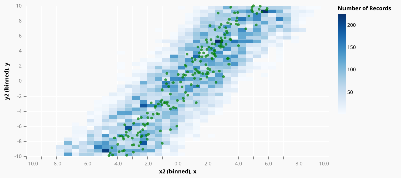
External: Probabilistic Programming with Monad-Bayes, Part 2: Linear Regression November 8, 2019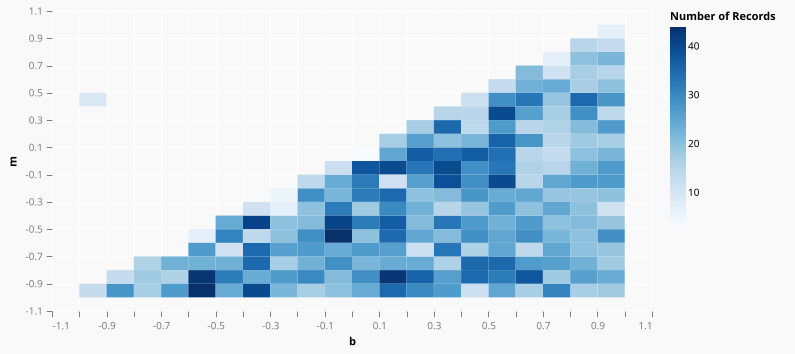
External: Probabilistic Programming With Monad-Bayes, Part 1: First Steps September 20, 2019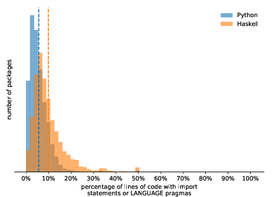
External: Revelations from Repetition: Source Code Headers In Haskell and Python July 17, 2019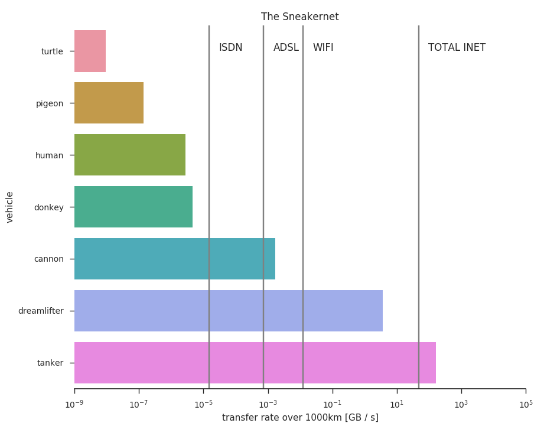
External: The Sneakernet: Towards a Much Faster Internet (Attention: Satiric) April 10, 2019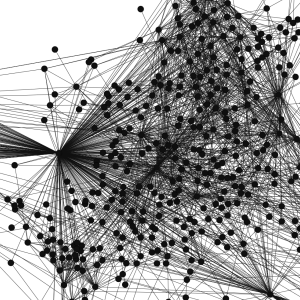
External: Jupyterwith: Declarative, Reproducible Notebook Environments February 28, 2019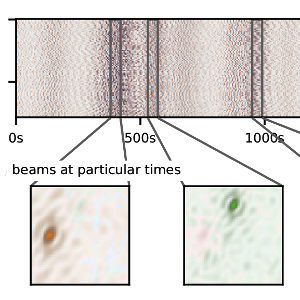
External: Blind source separation of temporally independent microseisms December 3, 2018


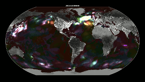
Animation of Secondary Noise Sources February 2, 2017

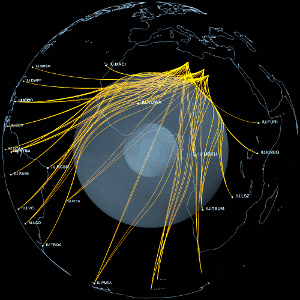
Visualization of Different Seismic Phases March 9, 2016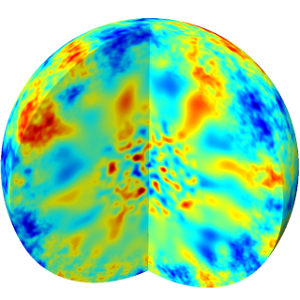
External: Non-stationary spherical random media and their effect on long-period mantle waves October 17, 2015


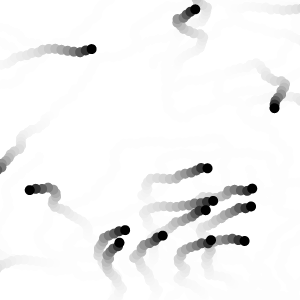
collective motion model February 21, 2014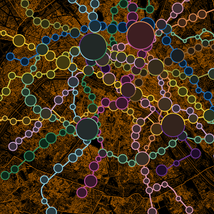
Annual Metro Traffic in Paris 2011 August 31, 2013
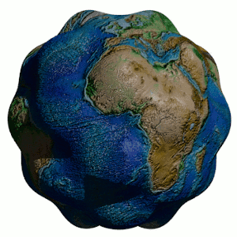
Animation of Earth's Normal Modes December 2, 2011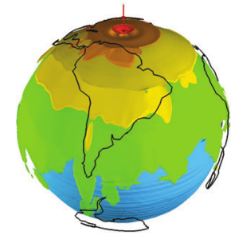
External: Antipodal focusing of seismic waves due to large meteorite impacts on Earth August 31, 2011